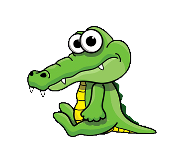

|  | The youngest is a very naughty chick. He has 10 siblings. Mother and father. and his 10 siblings have often advised the youngest. The youngest likes to play alone to a far place
One day, the youngest was playing alone by the river at the end of the forest. "I'm hungry. I'm looking for food first ah .." said the youngest as he continued to walk. "Youngster don't go there!" stop her mother
"There are a lot of snakes and crocodiles there!"
Wow, the youngest jumped with joy when he found a qua by the river. Inside the qua's mouth was filled with many flies flying here and there. "Youngest don't go in! The cave isn't necessarily safe for you to stop the mother hen from afar. But the youngest didn't hear. She kept walking into the cave.... When the youngest was busy catching flies in the mouth of the cave. suddenly the mouth of the cave closed. It turned out that the qua was the mouth of a crocodile waiting for its prey. 5) The youngest was caught and swallowed by the crocodile.. |